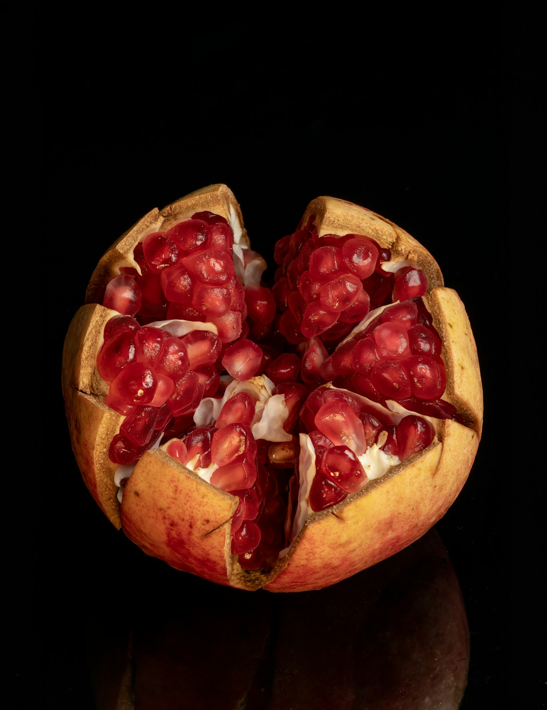
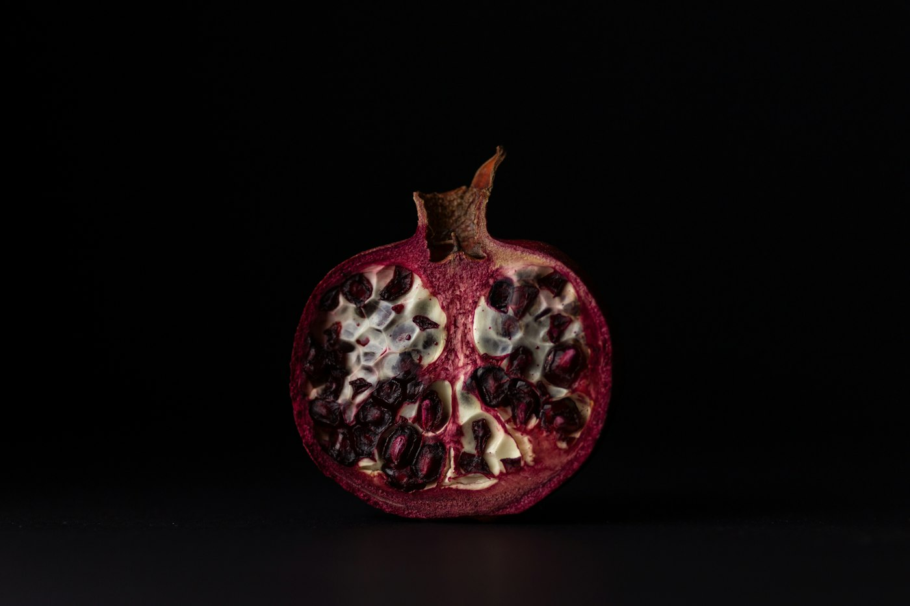
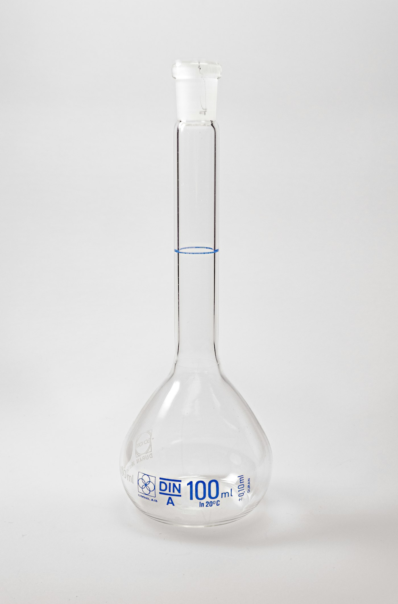

5 Key IngredientsPomegranate · 20 g × 14
석류맛 Pomegranate
이너에라 롱지비티Inner:Era Longevity
20 g × 14포·280 g·Easy Cut
GIP-01 특허원료 사용
5가지 핵심 원료로 설계한 프리미엄 롱제비티 데일리 포뮬러. 따로 챙기던 다섯 가지를 석류맛 젤리스틱 한 포에 담았습니다.
- 5가지 핵심 원료를 한 포에
- GIP-01 특허원료 (특허 제10-2951534호)
- HACCP 안전관리인증 (식품의약품안전처)

Inside one stick
5가지
핵심 원료
석류맛 젤리스틱 한 포 · 20 g
제품 정보
Inner:Era Longevity · 1상자 기준
- 제품명
- 이너에라 롱지비티
- 구분
- 일반식품(건강기능식품 아님)
- 맛
- 석류맛 Pomegranate
- 내용량
- 20 g × 14포 (280 g)
- 핵심 원료
- 5가지
- 특허원료
- GIP-01 (제10-2951534호)
알파리포산, 글루타치온, 커큐민, 퀘르세틴, NMN(니코틴아마이드 모노뉴클레오타이드)
HACCP안전관리인증
GIP-01특허원료
EASY CUT스틱 포장
Alpha-Lipoic Acid알파리포산Glutathione글루타치온Curcumin커큐민Quercetin퀘르세틴NMN니코틴아마이드 모노뉴클레오타이드Pomegranate석류맛
Alpha-Lipoic Acid알파리포산Glutathione글루타치온Curcumin커큐민Quercetin퀘르세틴NMN니코틴아마이드 모노뉴클레오타이드Pomegranate석류맛

Formulated withGIP-01 특허원료
다섯 가지 핵심 원료를 하나의 젤리스틱에. 따로 챙기던 다섯 통 대신, 하루 한 포.
Ingredient overview원료 5가지
다섯 가지 원료, 한 포 안에
|
알파리포산ALA |
글루타치온Glutathione |
커큐민Curcumin |
퀘르세틴Quercetin |
NMNNicotinamide MN |
| 분자식 | C8H14O2S2 | C10H17N3O6S | C21H20O6 | C15H10O7 | C11H15N2O8P |
| 분자량 | 206.3 | 307.33 | 368.4 | 302.23 | 334.22 |
| 분류 | 황 함유 지방산 | 트리펩타이드 | 폴리페놀 | 플라보놀 | 뉴클레오타이드 |
| 자연 속 유래 | 시금치·브로콜리 등에 미량 | 효모 등에서 얻음 | 강황 뿌리줄기의 노란 색소 | 양파 껍질·사과·케이퍼 | 브로콜리·에다마메·아보카도 등에 미량 |
| 이너에라 한 포 | ✓ | ✓ | ✓ | ✓ | ✓ |
*상기 내용은 제품이 아닌 원료에 대한 정보입니다. 분자식·분자량: PubChem
PubMed원료 연구 배경
글루타치온을 제목·초록에서 다룬 PubMed 논문은 180,343편입니다.
PubMed 제목·초록 검색 기준 · 2026년 10월
Data fromPubMed · PubChem

원료마다 직접 조회한 숫자입니다다섯 가지 원료 이름으로 각각 검색해
논문 수를 같은 기준으로 비교했습니다.
50,000
100,000
150,000
200,000
PubMed 논문 수(편)
7,3997,399
180,343180,343
28,84528,845
33,39033,390
1,5481,548
알파리포산글루타치온커큐민퀘르세틴NMN
선택한 원료다른 원료
한 상자,
14포의 데일리 리추얼
20 g 젤리스틱 14포 · 280 g
첫 포를 여는 날
상자 하나에 20 g 스틱 14포. 스틱 윗부분의 EASY CUT 표시를 따라 엽니다. 미래의 나를 위한 자기관리를 하루 한 포로 시작합니다.
Key ingredients
다섯 가지 원료의 구조와 유래
01 · PubChem CID 864
알파리포산Alpha-Lipoic Acid
- 분자식
- C8H14O2S2
- 분자량
- 206.3
- 분류
- 지방산
황 원자 2개가 고리를 이룬 지방산입니다. 시금치·브로콜리 등에 미량 들어 있습니다.
PubMed 논문 7,399편제목·초록 검색 기준, 2026년 10월
02 · PubChem CID 124886
글루타치온Glutathione
- 분자식
- C10H17N3O6S
- 분자량
- 307.33
- 분류
- 트리펩타이드
글루탐산·시스테인·글리신, 세 가지 아미노산이 이어진 트리펩타이드입니다. 효모 등에서 얻습니다.
PubMed 논문 180,343편제목·초록 검색 기준, 2026년 10월
03 · PubChem CID 969516
커큐민Curcumin
- 분자식
- C21H20O6
- 분자량
- 368.4
- 분류
- 폴리페놀
강황(Curcuma longa) 뿌리줄기의 노란 색소 성분입니다.
PubMed 논문 28,845편제목·초록 검색 기준, 2026년 10월
04 · PubChem CID 5280343
퀘르세틴Quercetin
- 분자식
- C15H10O7
- 분자량
- 302.23
- 분류
- 플라보놀
양파 껍질·사과·케이퍼 등에 있는 플라보놀(플라보노이드)입니다.
PubMed 논문 33,390편제목·초록 검색 기준, 2026년 10월
05 · PubChem CID 14180
NMNNicotinamide Mononucleotide
- 분자식
- C11H15N2O8P
- 분자량
- 334.22
- 분류
- 뉴클레오타이드
비타민 B3(나이아신) 계열에서 만들어지는 뉴클레오타이드로, NAD+의 전구체로 연구되는 성분입니다. 브로콜리·에다마메·아보카도 등에 미량 들어 있습니다.
PubMed 논문 1,548편제목·초록 검색 기준, 2026년 10월
*상기 내용은 제품이 아닌 원료에 대한 정보입니다. 분자 구조: PubChem 3D 좌표로 그린 공-막대 모형(검정 탄소 · 붉은 산소 · 푸른 질소 · 노란 황 · 주황 인)
자주 묻는
질문
패키지에 적힌 표기 그대로 답합니다.
- 어떤 맛인가요?
- 석류맛(Pomegranate) 젤리스틱입니다.
- 한 상자에 몇 포가 들어 있나요?
- 20 g 스틱 14포, 모두 280 g입니다.
- 건강기능식품인가요?
- 아니요. 이너에라 롱지비티는 건강기능식품이 아닌 일반식품입니다.
- GIP-01은 무엇인가요?
- 이너에라 롱지비티에 사용한 특허원료입니다. 특허 제10-2951534호.
- 인증 표기가 있나요?
- 식품의약품안전처 HACCP 안전관리인증 표기가 있습니다.
한 상자의 구성
20 g × 14포 · 280 g
Box
이너에라 롱지비티 1상자
5가지 핵심 원료로 설계한 데일리 포뮬러
20 g × 14포 (280 g)
Stick
젤리스틱 1포
윗부분 EASY CUT 표시
20 g
 Pomegranate
Pomegranate석류맛
Pomegranate flavor
젤리스틱
미래의 나를 위한
데일리 포뮬러
Inner:Era Longevity
이너에라 롱지비티는 건강기능식품이 아닌 일반식품입니다.
논문 수: PubMed 제목·초록 검색 기준, 2026년 10월 — 알파리포산 7,399편 · 글루타치온 180,343편 · 커큐민 28,845편 · 퀘르세틴 33,390편 · NMN 1,548편. 분자식·분자량·3D 구조: PubChem (CID 864 · 124886 · 969516 · 5280343 · 14180).
*상기 원료 내용은 제품이 아닌 원료에 대한 정보입니다.